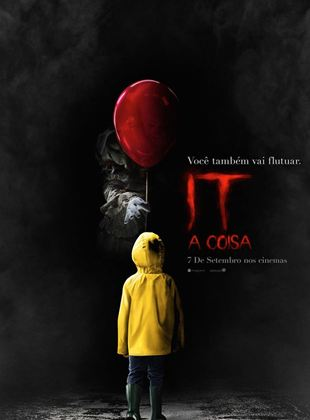

Homem-Aranha no Aranhaverso

Após ser atingido por uma teia radioativa, Miles Morales, um jovem negro do Brooklyn, se torna o Homem-Aranha, inspirado no legado do já falecido Peter Parker. Entretanto, ao visitar o túmulo de seu ídolo em uma noite chuvosa, ele é surpreendido com a presença do próprio Peter, vestindo o traje do herói por baixo de um sobretudo. A surpresa fica ainda maior quando Miles descobre que ele veio de uma dimensão paralela, assim como outras versões do Homem-Aranha
TrailerHomem-Aranha Longe de Casa

Peter Parker está em uma viagem de duas semanas pela Europa, ao lado de seus amigos de colégio, quando é surpreendido pela visita de Nick Fury. Convocado para mais uma missão heroica, ele precisa enfrentar vários vilões que surgem em cidades-símbolo do continente, como Londres, Paris e Veneza, e também a aparição do enigmático Mysterio.
TrailerOne Piece Film Gold

Situado em Gran Tesoro, um país independente autorizado pelo Governo Mundial, lar da maior cidade de entretenimento do mundo, onde piratas, marinheiros e milionários conhecidos em todo o mundo se reúnem em um “santuário absoluto” que nem o governo mundial pode tocar . Lá, os Piratas do Chapéu de Palha encontram o governante do país, o imperador dourado, Gild Tesoro, que facilmente vence piratas, os fuzileiros navais e até o governo mundial ao seu lado com dinheiro. Ele está prestes a tomar medidas para satisfazer sua ambição, o que pode resultar em grandes mudanças nas relações de poder no Novo Mundo.
TrailerIt: a coisa
Um grupo de crianças se une para investigar o misterioso desaparecimento de vários jovens em sua cidade. Eles descobrem que o culpado é Pennywise, um palhaço cruel que se alimenta de seus medos e cuja violência teve origem há vários séculos.
Trailer